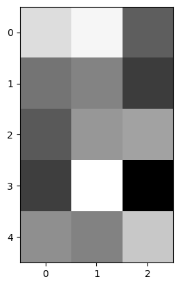
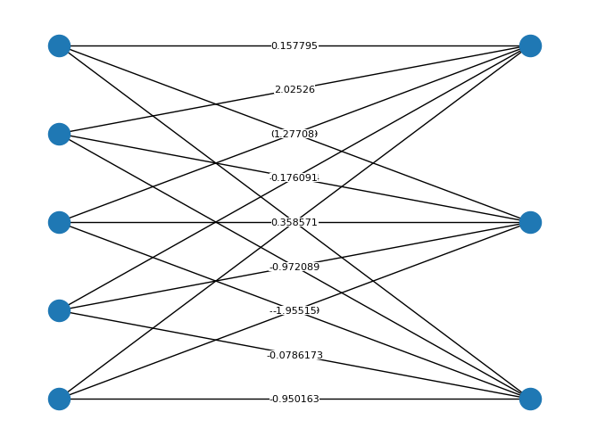
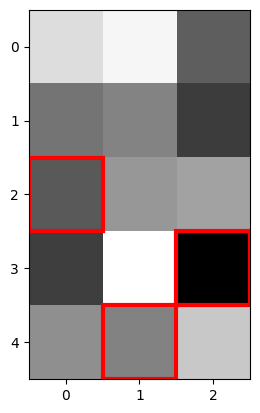
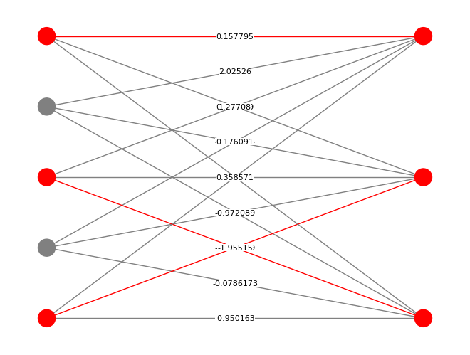
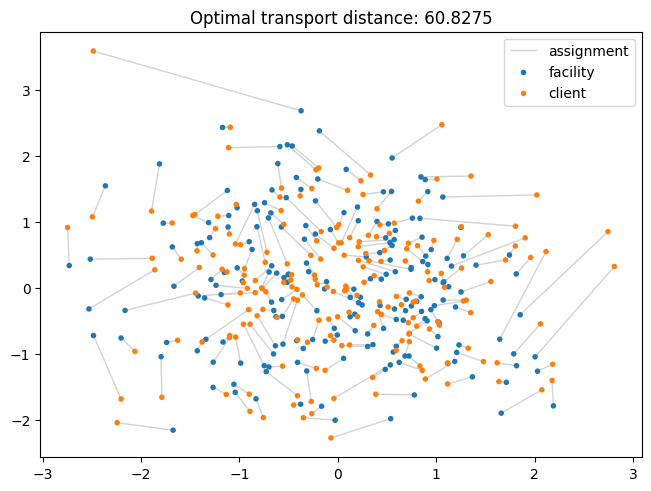

Linear assignment problem#
The linear assignment problem is a fundamental problem in combinatorial optimization.
In this problem, we are given an \(n \times m\) cost matrix. The goal is to compute an assignment, i.e. a set of pairs of rows and columns, in such a way that:
At most one column is assigned to each row.
At most one row is assigned to each column.
The total number of assignments is \(\min(n, m)\).
The assignment minimizes the sum of costs.
Equivalently, given a weighted complete bipartite graph, the problem is to find a maximum-cardinality matching that minimizes the sum of the weights of the edges included in the matching.
Formally, the problem is as follows. Given \(C \in \mathbb{R}^{n \times m}\), solve the following integer linear program:
The Hungarian algorithm is a cubic-time algorithm for this problem.
First, we install NetworkX, a Python library that lets us draw graphs. You can do this by running the following command on your terminal:
pip install -U networkx
Next, we import the libraries we will use:
!pip install -q -U networkx
import networkx as nx
from jax import random
import optax
from matplotlib import pyplot as plt
We sample a random cost matrix:
n = 5 # number of rows
m = 3 # number of columns
key = random.key(0)
costs = random.normal(key, (n, m))
print(costs)
[[ 1.6226422 2.0252647 -0.43359444]
[-0.07861735 0.1760909 -0.97208923]
[-0.49529874 0.4943786 0.6643493 ]
[-0.9501635 2.1795304 -1.9551506 ]
[ 0.35857072 0.15779513 1.2770847 ]]
We can visualize the cost matrix as follows:
plt.imshow(costs, cmap="gray");

We can also visualize the costs as a weighted bipartite graph. Below, rows are shown as nodes the left and columns are shown as nodes the right.
G = nx.Graph()
rows = [f"row {i}" for i in range(n)]
cols = [f"col {j}" for j in range(m)]
edges = [(rows[i], cols[j], {"cost": costs[i, j]}) for i in range(n) for j in range(m)]
G.add_nodes_from(rows + cols)
G.add_edges_from(edges)
layout = nx.bipartite_layout(G, rows)
nx.draw(G, layout)
nx.draw_networkx_edge_labels(
G,
layout,
edge_labels={(u, v): f"{info['cost']:g}" for u, v, info in edges},
rotate=False,
font_size=8,
bbox=dict(
pad=0.0,
facecolor="white",
edgecolor="none",
),
);

To solve the problem, we call optax.assignment.hungarian_algorithm() on the cost matrix.
sol_i, sol_j = optax.assignment.hungarian_algorithm(costs)
print(sol_i, sol_j)
[3 4 2] [2 1 0]
We can visualize the solution as follows:
def highlight_cell(x, y, **kwargs):
rect = plt.Rectangle((x - 0.5, y - 0.5), 1, 1, fill=False, **kwargs)
plt.gca().add_patch(rect)
return rect
plt.imshow(costs, cmap="gray")
for i, j in zip(sol_i, sol_j):
highlight_cell(j, i, color="red", linewidth=3)
plt.show()

We can also visualize the solution by drawing it on top of the previous bipartite graph. Below, nodes and edges that are included in the solution are shown in red.
nx.draw(
G,
layout,
node_color=["red" if i in sol_i else "grey" for i in range(n)] + ["red" if j in sol_j else "grey" for j in range(m)],
edge_color=["red" if (i, j) in zip(sol_i, sol_j) else "grey" for i in range(n) for j in range(m)],
)
nx.draw_networkx_edge_labels(
G,
layout,
edge_labels={(u, v): f"{info['cost']:g}" for u, v, info in edges},
rotate=False,
font_size=8,
bbox=dict(
pad=0.0,
facecolor="white",
edgecolor="none",
),
);

Optimal transport#
A linear assignment solver can be used to solve an optimal transport problem: Given a multiset of points \(X \in \mathbb{R}^{n \times d}\) and another multiset of points \(Y \in \mathbb{R}^{n \times d}\), find a permutation \(\pi \in \text{Sym}(n)\) between them that minimizes the total transportation cost:
where \(d\) is a metric, such as the Euclidean distance on \(\mathbb{R}^d\).
Below is an illustrated example where \(X\) is a set of facility locations and \(Y\) is a set of client locations that must be matched to each other.
import jax
import optax
from jax import numpy as jnp, random
from matplotlib import collections, pyplot as plt, rcParams
def get_optimal_transport(x, y):
assert x.ndim == 2
assert x.shape == y.shape
displacements = x[:, None] - y[None, :]
distance_matrix = jnp.linalg.norm(displacements, axis=-1)
i, j = optax.assignment.hungarian_algorithm(distance_matrix)
total_distance = distance_matrix[i, j].sum()
return (i, j), total_distance
def main():
num_points = 200
markersize = 16.0
key = random.key(0)
keys = random.split(key)
x = random.normal(keys[0], (num_points, 2))
y = random.normal(keys[1], (num_points, 2)) + jnp.array([0.2, 0.0])
(i, j), total_distance = get_optimal_transport(x, y)
fig, ax = plt.subplots(constrained_layout=True)
data = jnp.stack((x[i], y[j]), 1)
lc = collections.LineCollection(data, linewidth=1.0, color="lightgrey", zorder=0, label="assignment")
ax.add_collection(lc)
ax.scatter(*x.T, s=markersize, edgecolor="none", label="facility")
ax.scatter(*y.T, s=markersize, edgecolor="none", label="client")
ax.set(title=f"Optimal transport distance: {total_distance:g}")
ax.legend()
plt.show()
main()

This, in turn, can be used to estimate the Wasserstein distance between two distributions, by sampling a large batch of points from each and then computing the optimal transport cost between those batches.
More precisely, if \(W_p\) denotes the \(p\)-Wasserstein distance and \(P\) and \(Q\) are empirical distributions with samples \(X\) and \(Y\), respectively, then: